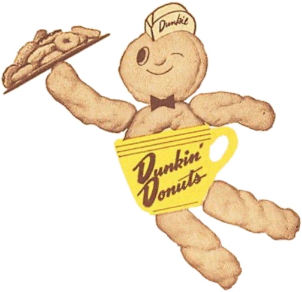

DUNKIN' Nederland
Dunkin’ opende zijn eerste Dunkin’ Donuts-winkel in Nederland begin 2017 en zijn eerste winkel in België in 2020. Het bedrijf kondigt aan dat het op het punt staat "Nederland en België te veroveren."
Dunkin' begon als een kleine donut- en koffiezaak in Quincy, Massachusetts. Sindsdien zijn we uitgegroeid tot een wereldwijd geliefd koffie- en donutmerk, dat elke dag miljoenen gasten bedient.
Dunkin’ opende zijn eerste Dunkin’ Donuts-winkel in Nederland begin 2017 en zijn eerste winkel in België in 2020. Het bedrijf kondigt aan dat het op het punt staat "Nederland en België te veroveren."
Dunkin' (voorheen Dunkin' Donuts), opgericht in 1950, heeft meer dan 12.200 locaties in 45 landen wereldwijd. Het bedrijf opereert voornamelijk via franchisenemers. Europa is de thuisbasis van 240 Dunkin'-winkels.
Het assortiment aan smaken groeit altijd, waardoor je meer heerlijke keuzes krijgt! Vers gemaakt in onze centrale bakkerij in Utrecht, kunnen deze donuts zelfs direct bij jou thuis worden bezorgd—geluk is slechts één klik verwijderd!